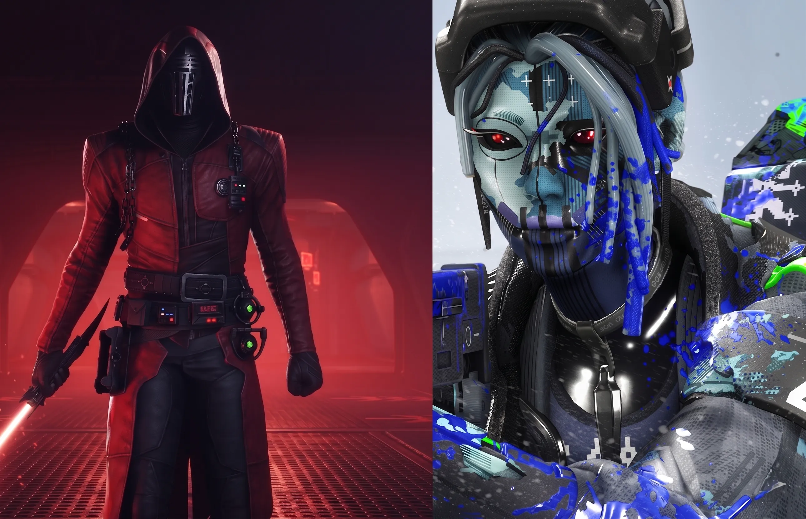

Destiny 2 vs Marathon: Bungie's Civil War — What Aztecross Said, $250M Cost & Why the Entire Franchise Is at Stake

Bungie is in the middle of a war with itself. Not a metaphorical one — a real, documented, financially consequential split between the studio's past and its future. Destiny 2, the game that kept Bungie alive and culturally relevant for a decade, is entering permanent maintenance mode. Marathon, the extraction shooter that Bungie has been building in secret since at least 2021 and has now spent north of $250 million developing, is supposed to replace it as the studio's flagship product. The Destiny community, which built some of the most dedicated fanbases in gaming history, is furious.
And then Aztecross published his video. The largest Destiny 2 content creator on YouTube, with over 1 million subscribers built entirely on Destiny coverage, came out with a video that said clearly and without diplomatic softening: he will not play Marathon's new season, he is considering turning down Sony brand deal money, and he will use his platform to push for Destiny 3 rather than support the new game. The video lit the community on fire — and it's worth understanding exactly why, because the stakes for Bungie are not small. They are existential.
Table of Contents
- What Aztecross Said — The Video That Broke the Community
- How Marathon Killed Destiny 2 — The Resource Drain Story
- Marathon's $250 Million Development Cost — The Full Financial Picture
- Destiny 2's Death in Numbers — Content Drought and the Final Expansion
- Destiny 3 Is Dead — What Sony Said No To
- Two Futures for Bungie — Both Are Uncomfortable
- Community Reactions — Divided Between Boycott and Pragmatism
- Paul Tassi's Counter-Argument — Why Hoping Marathon Fails Is Self-Defeating
- Frequently Asked Questions
What Aztecross Said — The Video That Broke the Community
Aztecross — real name Daniel Hill — built his YouTube channel exclusively on Destiny content. Every video, every stream, every brand deal for years has been Destiny-adjacent. When the largest dedicated Destiny creator publicly declares he won't support the studio's new flagship game and won't take Sony's money to promote it, that's not a minor drama. That's a creator with over a million followers drawing a line in front of the game's entire potential audience.
His position in the video is specific, not vague. He will not play Marathon's new season. He may decline brand deals from Sony specifically because of what happened to Destiny 2. He wants Destiny 3, not Marathon. He plans to continue making this point publicly, using his platform as leverage rather than just expressing frustration and moving on. The implicit message to Sony and Bungie is direct: if you want access to this audience for Marathon promotion, you need to give this community something back in the form of Destiny's future.
Aztecross is not the first Destiny creator to express these views — he's the most prominent. Streamers like Datto, Fallout Plays, and various mid-tier creators have all published similar sentiments over the past year as Destiny 2's content pipeline dried up. But Aztecross turning down money is a different kind of signal. That's a creator betting his livelihood on a principle, and the community noticed.
Also Read
More Gaming stories →How Marathon Killed Destiny 2 — The Resource Drain Story
The timeline of how Marathon absorbed Destiny 2's development resources is documented through reporting from Bloomberg's Jason Schreier and Forbes' Paul Tassi, cross-referenced with public information from Bungie leadership statements and developer LinkedIn profiles. The picture it creates is of a studio making a deliberate bet that Destiny 2's audience would accept degraded content while resources shifted to the new project — a bet that didn't pay off.
Beginning around 2021 and accelerating through 2022 and 2023, significant portions of Bungie's development teams were moved from Destiny 2 to Marathon. This included most of the dedicated PvP team — the group responsible for Crucible, Iron Banner, and competitive modes — who were reassigned to build Marathon's core extraction shooter gameplay. The loss of PvP-focused developers was the first visible symptom for the Destiny community, as Crucible updates slowed dramatically and eventually almost stopped entirely.
The content pipeline problems compounded. Destiny 2's annual expansion model required sustained development capacity. As Marathon absorbed more of the studio's budget and headcount, the expansion cadence became harder to maintain. The Final Shape expansion in 2024 was the last full expansion Bungie shipped, and the reception — while positive — couldn't obscure the growing content drought that followed it. Six months passed with minimal meaningful content updates. The player population declined sharply. And then Bungie announced there would be no more expansions.
To make the situation worse, Bungie conducted a significant round of layoffs in July 2024 — 220 employees, approximately 17 percent of the studio's total headcount. The stated reason was financial performance and the need to restructure. The unstated context, reported by Schreier, was that Marathon's development costs had exceeded projections and Sony was putting pressure on Bungie to reduce its burn rate while Marathon completed development.
Key Takeaways
- Aztecross, Destiny 2's largest content creator, has publicly stated he will not play or promote Marathon and may decline Sony brand deals — using his 1M+ subscriber platform as direct leverage against Bungie's new game.
- Marathon cost at least $250 million to develop, absorbed most of Destiny 2's PvP team, caused a six-month content drought, and led to the cancellation of all future Destiny 2 expansions. Marathon's player counts still haven't matched Destiny 2's numbers.
- Destiny 3 is not in development and has not been greenlit. Bungie's entire survival as a studio is now tied to Marathon's commercial success — if it fails, the studio faces dissolution, and there would be no path back to Destiny at all.
Marathon's $250 Million Development Cost — The Full Financial Picture
The $250 million figure for Marathon's development cost comes from reporting by Jason Schreier and Paul Tassi, and it's worth contextualizing against the broader Bungie-Sony financial relationship to understand why it matters so much.
Sony acquired Bungie for $3.6 billion in January 2023. At the time, the acquisition was framed as Sony gaining access to a live service expertise that PlayStation's first-party studios lacked. Bungie was supposed to be the template for how Sony would build ongoing live service games. That $3.6 billion price tag made sense if Bungie could deliver multiple successful live service products — Destiny continuing as a revenue engine and Marathon establishing a new franchise alongside it.
The math stopped working when Concord — Sony's other major live service bet — failed catastrophically. Concord launched in August 2024 and was shut down twelve days later after peak concurrent players on Steam numbered in the hundreds rather than the millions the game required to be viable. Sony wrote off approximately $400 million in Concord losses. That failure increased the scrutiny on every other Sony live service investment, including Marathon.
With $250 million already spent on Marathon development, Sony is now in a position where it needs Marathon to succeed not just for creative reasons but for financial accountability reasons. The game needs to generate meaningful revenue to justify the investment. And it needs to do this while Destiny 2's player count has declined and GTA Online, Fortnite, and Apex Legends continue to dominate the market for the kind of ongoing live service engagement Marathon is competing for.
Marathon's player counts since launch have remained below Destiny 2's numbers, even at Destiny 2's worst point during the content drought. That's the most damaging single statistic for Bungie's internal case that Marathon was the right bet.
Destiny 2's Death in Numbers — Content Drought and the Final Expansion
| Year | Destiny 2 Milestone | Impact |
|---|---|---|
| 2022 | Major PvP dev team moves to Marathon | Crucible updates slow dramatically |
| 2023–2024 | Content pipeline thins | Six-month periods with minimal seasonal content |
| June 2024 | The Final Shape expansion ships | Last major expansion Bungie commits to |
| July 2024 | 220 Bungie employees laid off (17%) | Sony restructuring due to Marathon budget overrun |
| Late 2024 | Bungie announces no more Destiny 2 expansions | Community response: mass player departure |
| 2025–2026 | Destiny 2 enters maintenance mode | No new story content, only live event cycling |
The maintenance mode announcement is what finally broke the community's patience. Bungie's message was essentially: Destiny 2 will continue to exist and be playable, but there will be no new narrative expansions, no major gameplay additions, and no continued development investment. The game would become a legacy product — technically alive, but creatively finished.
For a community that had spent years, thousands of hours, and significant money on Destiny 2 content and expansions, this was not a soft landing. It was an abrupt ending to a game that had been sold to them as an evolving, growing world. The anger directed at Marathon isn't irrational. It's the anger of people who feel the resources they needed to keep their game going were taken from them to build something they didn't ask for.
Destiny 3 Is Dead — What Sony Said No To
Multiple reports have confirmed that Bungie has explored the possibility of Destiny 3 as an alternative path forward — and Sony rejected it. The rejection wasn't a creative decision. It was a financial one. After the Concord writedown and Marathon's development costs, Sony does not have the appetite to greenlight another massive, multi-year live service project from Bungie that would cost hundreds of millions to build before a single dollar of revenue is generated.
Destiny 3 would require Bungie to essentially rebuild the Destiny engine, create a new world and story structure, rebuild the gunplay and ability systems, and then maintain two live service games — Marathon and Destiny 3 — simultaneously. Even if Sony believed in the concept, the financial structure makes it nearly impossible to justify at current investment levels.
Other Destiny spinoff projects — smaller-scale games that could explore the Destiny universe without requiring a full new game — have also not been greenlit. The intellectual property lives on, but no development is happening. Marathon is Bungie's only active project.
Two Futures for Bungie — Both Are Uncomfortable
The community debate about Marathon's future has produced a binary that neither side finds satisfying. Both scenarios have genuinely uncomfortable implications for the people who care about Destiny.
Scenario A: Marathon fails. Bungie does not generate sufficient revenue from Marathon to justify Sony's ongoing investment. Sony, having written off Concord and now Marathon, makes the decision to shut down Bungie or convert it into a support studio for other PlayStation first-party projects. All Destiny content development ends permanently. The intellectual property either sits unused or gets licensed to another developer who may or may not treat it with the care the community expects. There is no Destiny 3, ever.
Scenario B: Marathon succeeds. Bungie survives as a creative studio. Sony continues to invest in Bungie as a live service specialist. The door to future Destiny content reopens — not immediately, and not necessarily as Destiny 3, but the creative team and institutional knowledge that built Destiny remains intact and employed. The counterargument is that success in Marathon would cause Sony to double down on Marathon rather than pivot back to Destiny, meaning the game the community wants still doesn't get made.
Neither scenario gives Destiny fans what they actually want: Destiny 3 developed with full resources and genuine creative ambition. But one scenario at least preserves the possibility. The other closes it permanently.
Community Reactions — Divided Between Boycott and Pragmatism
The Destiny 2 subreddit, r/DestinyTheGame, has been a running real-time commentary on this situation for months. The community divides roughly into three camps.
The Aztecross camp — probably the plurality — agrees that the community should not reward Bungie with Marathon engagement until Bungie acknowledges that Destiny 2 deserved better and commits to some form of Destiny's future. They support creators turning down Sony brand deals, they're not playing Marathon, and they're vocal about it on social media. This is the most emotionally coherent position but also the one that, taken to its logical conclusion, accelerates Scenario A.
The pragmatist camp argues that playing Marathon — if you enjoy it — is not a betrayal of Destiny 2, and that hoping for Bungie's failure is self-destructive. If you care about any future Destiny content, Bungie surviving is a prerequisite for that content to ever exist. This is Paul Tassi's position at Forbes, and it's the most financially logical argument even if it feels emotionally unsatisfying.
The third camp has simply left. Former Destiny players who have moved to Warframe, Path of Exile 2, Helldivers 2, or other looter-shooters and aren't engaging with either debate. They've made their peace with Destiny's end and moved on. This group is probably the largest in raw numbers and is the most consequential for both Bungie and for the other games' communities.
Paul Tassi's Counter-Argument — Why Hoping Marathon Fails Is Self-Defeating
Paul Tassi at Forbes has been the most consistent voice of the pragmatist position, and his argument deserves a full hearing even for those who viscerally disagree with it. The core logic: if you want any future Destiny content to exist, Bungie must survive as a functional creative studio. Bungie surviving requires Marathon to generate revenue. Therefore, hoping Marathon fails is hoping for a future where Destiny ceases to exist in any form.
Tassi makes clear that this doesn't mean players owe Bungie their time or money for a game they don't enjoy. If Marathon isn't your type of game, don't play it. If the monetization is bad, criticize it. If the content is weak, say so. But actively campaigning for the game to fail, organizing boycotts, and using creator platforms to suppress the game's audience creates the exact outcome the Destiny community says it doesn't want.
The counter-counter-argument from the Aztecross camp is that a successful Marathon would simply lock Bungie into Marathon development for the next decade, making Destiny's future even less likely than it already is. They're not wrong that this is a possible outcome. The question is whether that future with Marathon success is worse or better than the future where Marathon fails and Bungie closes. Most reasonable analysis suggests closure is worse — but the Destiny community has been through enough that reasonable analysis isn't always the dominant mood.
Frequently Asked Questions
What did Aztecross say about Destiny 2 and Marathon?
Aztecross published a video stating he will not play Marathon's new season and is considering turning down Sony brand deals. He said clearly he wants Destiny 3, not Marathon, and will use his 1M+ subscriber platform to push that message. The video represents a deliberate choice to prioritize principle over significant financial opportunity.
Why are Destiny 2 fans angry at Marathon?
Hundreds of Bungie developers — including most of the PvP team — were transferred from Destiny 2 to Marathon from 2022 onward. This gutted Destiny 2's development pipeline, caused a six-month content drought, led to 220 layoffs in July 2024, and resulted in Bungie cancelling all future Destiny 2 expansions. The community views Marathon as the direct cause of Destiny 2's death.
How much did Marathon cost to develop?
At least $250 million, according to reporting from Jason Schreier and Paul Tassi. This is in addition to the $3.6 billion Sony paid to acquire Bungie in January 2023. Despite this investment, Marathon's player counts have remained below Destiny 2's numbers even during Destiny's lowest engagement periods.
Is Destiny 3 in development?
No. Destiny 3 has not been greenlit by Sony. After writing down Concord losses and dealing with Marathon's development costs, Sony rejected the concept as financially unjustifiable at current investment levels. Marathon is Bungie's only active game project.
What happens to Bungie if Marathon fails?
Likely studio shutdown, significant downsizing beyond the 2024 layoffs, or conversion into a PlayStation support studio. Sony would not fund another major Bungie project after three consecutive failures (Concord, and potentially Marathon, following Destiny 2's commercial decline). If Bungie closes, Destiny's future ends permanently.
Should Destiny fans boycott Marathon?
Players don't owe Bungie their time or money for a game they don't enjoy. But actively hoping Marathon fails creates the scenario where Bungie shuts down — permanently ending any possibility of Destiny 3 or future Destiny content. The pragmatic argument is that Bungie surviving, even making a game you don't like, is better for Destiny's long-term future than Bungie not existing.
Conclusion
The Destiny 2 vs Marathon civil war is ultimately a story about what happens when a studio bets its future on a new direction and the community built around its old direction refuses to follow. Bungie made a choice — Marathon over Destiny — and the Destiny community's reaction is the predictable, understandable consequence of that choice. Aztecross refusing Sony's money is not just a content creator making a statement. It's the most visible symptom of a community that feels genuinely abandoned.
The tragedy of the situation is that both sides have a legitimate point. The Destiny community is right that Destiny 2's deterioration was caused by Marathon's resource drain and that they deserve an acknowledgment of that, at minimum. Bungie and the pragmatist camp are right that the only path to any future Destiny content runs through Marathon's success, not its failure. These two things are both true simultaneously, and there's no resolution that makes either side fully satisfied.
What happens next depends on whether Marathon can find an audience beyond the extraction shooter hardcore — the same challenge every non-Warzone, non-Escape from Tarkov game in the genre faces — and whether Sony remains patient enough with Bungie's timeline to give it the chance to find that audience. For the Destiny community, the uncomfortable reality is that the game they loved is gone, the replacement isn't what they wanted, and the future they're hoping for depends on that replacement succeeding anyway.

Marcus J. Holloway
Senior Tech Educator & AI Researcher
Technology educator and AI analyst with 15+ years of experience tracking artificial intelligence, enterprise software, and the companies building the future of computing. Has covered every major AI lab — OpenAI, Anthropic, Google DeepMind, and Meta AI — since their founding. Dedicated to making complex technical and policy developments accessible to students, developers, and professionals through Ultimate Schooling.
💬 Questions or Comments?
Have a question or want to share your thoughts? Leave a comment below!